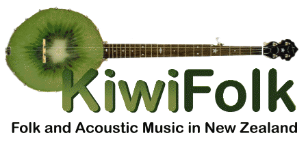

|
HOME
ARTISTS
CLUBS
FESTIVALS
INSTRUMENTS
LINKS
NZ TOURS
PHOTOS
RESOURCES
SESSIONS
TUNES
UPDATES
|
|

NZ Folk Artists
These artists are listed here (in alphabetical order) purely for information.
KiwiFolk does not represent these artists in any way. While the list is a
representative selection of Kiwi folk and related artists, it is by no means
exhaustive.
Ben the Hoose
Beverly and the Clench Mountain Boys
Bickerton, Bob
Big Muffin Serious Band
Chad, Tony
Catgut and Steel
Collins, Laura
Considine, Mike
Copperkin
Curtis, Martin
Delgirl
Dorothy, Helen
Drane, Phil
Fiddlesticks
Finn McCool
Footspa
Garland, Phil
Gavin, Nigel
Gillespie, Wayne
Glór na mBan
Goodsman, Lil' Ian
Harding, Mike
Hillyard, Tony
Hugh, Owen
Hunter, Karen
Jacky Tar
Kerr, Simon
Large, Bob
Laurent, Mark
Layton, Marg
Liddiard, Brenda
Leschen, Richard
Lipscombe, Mike
Little Green Men
Little Woolly
Layton, Marg
Mandolinata (Auckland Mandolin Orchestra)
Metsers, Paul
McNeil, Judith
McNeill, Bob
Moffatt, Glen
Montgomery, Brendyn
Muggeridge, Alan
Paul and Penny
Payne, Warren
Power, Brendan
Robertson, Tyree
Rosewood
Simmonds, Pat
Songbong
Starr, Crystal
Stringer, Terry
Strumpet
Sunde, Rudy
Sutherland, Robyn
Tait, Kath
The Chaps
The Gazebo Girls
The Hobnail Boots
The Maritime Crew
The Remarkables
Tocker, Mahinaarangi
Towhead
Turner, Marcus
Twisted Timber
Twisty Willow
Waiting for Donald
Wardrop, Graham
Wires and Wood
Webby, Helen - and Davy Stuart
Worsfold, Bill and Kath
Yates, Charlotte
|
|
|